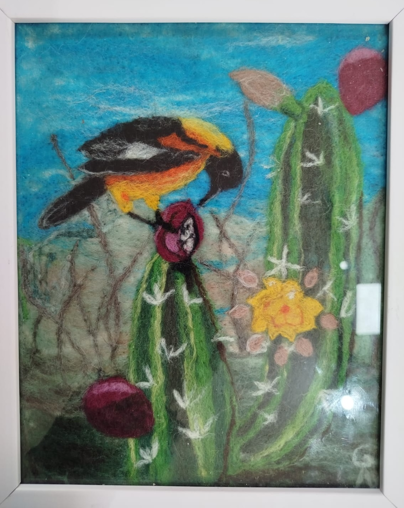
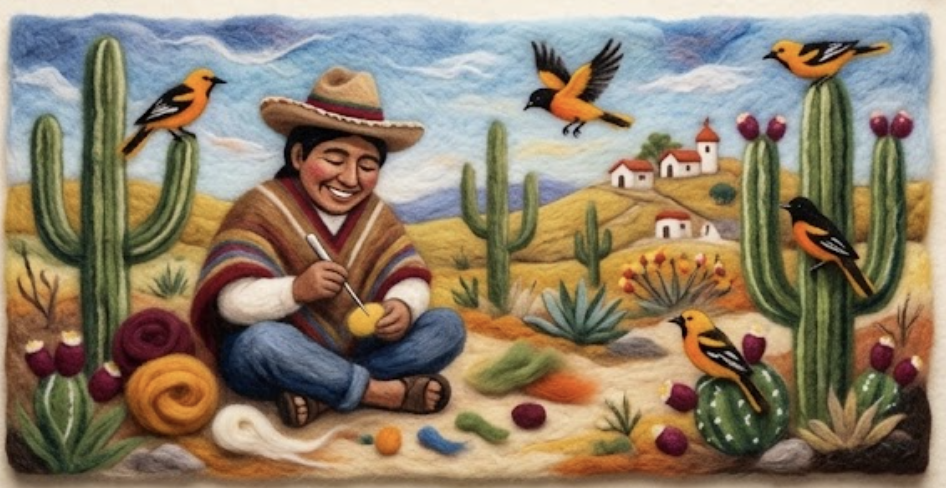
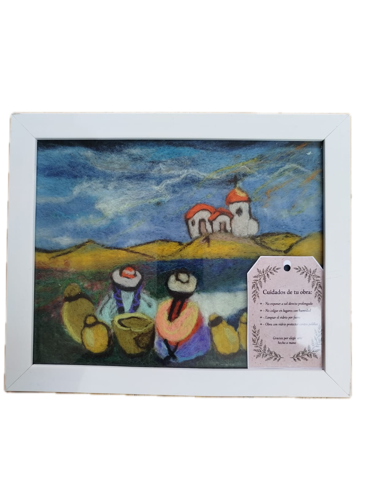

🐦 AvesEl Bicho Feo (Turpial)
Ave icónica de la región andina, capturada en lana con su característico plumaje negro y amarillo sobre fondo de cielo andino.
✨ Arte en lana vellón agujada · Tucumán, Argentina
Cuadros únicos de fieltro agujado con alma andina: paisajes de altura, aves silvestres, cardones y figuras coyass. Cada obra, una pieza irrepetible hecha a mano con lana vellón y pasión artesanal.
Soy artista textil de Tucumán, Argentina, enamorada de la técnica del fieltro agujado —también llamado needle felting o pintura con lana. Con una aguja especial y lana vellón de colores, "pinto" cuadros escena a escena, fibra por fibra, sobre una base de fieltro.
Mi inspiración vive en el Norte Argentino: el cielo azul y hondo de los cerros, el amarillo encendido de las flores de cardón, el negro brillante del bicho feo (turpial), y la majestuosidad de la cultura coya que dan identidad a nuestra tierra. Cada cuadro es único e irrepetible.

Cada obra está firmada, enmarcada y acompañada de su ficha de cuidados.

🐦 AvesAve icónica de la región andina, capturada en lana con su característico plumaje negro y amarillo sobre fondo de cielo andino.

🏔️ AndinoRepresentación de las figuras culturales coyas de la Puna, con sus colores rituales y la textura única de la lana vellón andina.
Del vellón crudo a la obra enmarcada: así nace cada cuadro de fieltro agujado.
Elijo las fibras de lana vellón natural teñida a mano según la paleta de colores de la obra: azules andinos, verdes de cardón, amarillos solares y los rojos intensos de la tuna.
Preparo una base de fieltro prensado que actúa como lienzo. Sobre ella comienzo a esbozar la composición colocando capas suaves de vellón como si fuera boceto a mano alzada.
Con agujas de fieltrar especiales, entrelaco las fibras de lana golpeando suavemente hasta que las hebras se fusionan y toman forma. Así construyo texturas, volúmenes y degradados imposibles en la pintura tradicional.
Agrego los detalles finales: plumas de aves, flores de cactus, rostros de figuras, aristas de montaña. Cada hebra colocada con intención y precisión hasta lograr la atmósfera buscada.
La obra terminada se coloca bajo vidrio en un marco de madera natural. Se adjunta la ficha de cuidados escrita a mano y va firmada al dorso. Lista para decorar tu hogar o ser un regalo único.
Cada cuadro incluye esta ficha de cuidados escrita a mano. Aquí la versión digital.
🏷️ Instrucciones de Cuidado · Gabriela Nicosia
Sin luz solar directa No exponer a luz solar directa prolongada para preservar los colores de la lana vellón.
Evitar la humedad No colgar en lugares con humedad alta (baños, cocinas). La lana puede absorber la humedad y perder forma.
Limpieza del vidrio Limpiar solo el vidrio exterior con paño seco o ligeramente húmedo. No abrir el marco.
Transporte seguro Para mover o guardar la obra, envolver en papel tissue y mantener horizontal o vertical, nunca apoyada sobre el vidrio.
Temperatura estable Evitar cambios bruscos de temperatura. Ideal entre 15°C y 28°C para conservar las fibras.
Colgar con cuidado Usar el colgador trasero incluido. Asegurarse de que el clavo o gancho soporte el peso del marco.
🤍 Hecho con amor y aguja · Arte en Fieltro Agujado · Tucumán, Argentina
"Compré el cuadro por encargo para mi sala y cada vez que lo miro me enamora más. La textura de la lana tiene una calidez que ninguna pintura da. ¡Una obra de arte única!"
María Laura G.
Coleccionista · San Miguel de Tucumán
"Le encargué el cuadro a Gaby por recomendación y no puedo estar más feliz."
Carlos H.
Cliente · Tilcara, Jujuy
"Gabriela tiene una paciencia y un talento increíbles. El nivel de detalle en las plumas del pájaro es impresionante. Vine desde Buenos Aires y no me fui sin mi cuadro."
Sofía M.
Turista · Buenos Aires
¿Tenés una idea especial, un paisaje de Tucumán o un ave que te gustaría tener en técnica de fieltro agujado? Escribime por WhatsApp y diseñamos juntos tu obra exclusiva.
Chatear ahora